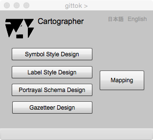

Cartographer
地図表現
はじめに
データと似た言葉に情報があります．データはある規則に従って作られた符号の集りです．これに対して情報は，受け手が意味を理解できるデータ，意味が付加されたデータのことを指します．データに意味を付加して情報にする行為を，gittokでは表現 (representation) と呼びます．地理データの表現には，文章，音声，表，そしてグラフなど，いろいろな手段がありますが，地理データに特有の表現法として地図があります．
地図デザイン
地図をデザインする人は，受け手が実世界の過去・現在・未来を想像し，考え，判断し，行動するということを考えなければいけません．人間はデータを見るのではなく，表現された地図を見ます．従って，情報としての地図の価値は，その元になるデータの品質のみならず，表現，つまり地図デザインの善し悪しで決まるといってもよいでしょう．では，地図表現の善し悪しは，どのように判断するのでしょうか．Judith A. Tyner (2010)は，地図制作を計画する人は，地図の明瞭さ，秩序，釣り合い，対比，統一感，調和を考えて計画すべきといっています．
明瞭さ (Clarity)
地図の目的が明確にわかり，重要な点が際立ち，メッセージとしないものは省くことによって，明瞭さが生じる．ただし，過度の強調は逆効果である．
秩序 (Order)
地図を論理的に作ることで，秩序が得られる．地図は総観 (synoptic) するものであり，地図を製作する人 (cartographer)は，受け手が地図を眺める順序を決めることはできない．しかし，受け手の心理を考え，例えば，人は，縦の線は上から下，横の線は左から右に見るということもある．
釣り合い (Balance)
地図上に表現される要素は全て，視覚的な重み (visual weight)をもつ．一般的に長方形の紙の視覚的な中心は，幾何的な中心より，わずかに上にある．また，視覚的な重みには，以下のような性質がある．
同じものを中心に置くより，周辺におく方が重みは重くなる．
同じものを上におく方が，下におくより重くなる．
同じものを左におくより，右におく方が重くなる．
中心から離れるほど，ものの重みは増加する．
他から離れて孤立したものの方が，集団中にあるものより重い．
より大きなものはより重い．
赤いものは青いものより重い．
より明るいものはより暗い物より，重い．
規則的な形状をしたものは，不規則な形をしたものより，重い．
コンパクトにまとまったものの集まりは，不規則でバラバラな集まりより，重い．
縦にそろえられたものの集まりは，斜めに集めた集りより，重い．
対比 (Contrast)
対比とはこの場合，明暗，厚薄，軽重のことである．単一の太さの線，単一の大きさやフォントの文字だけで地図を作っても対比の感覚は得られないし，見た目が悪いし，読みづらい．
統一感 (Unity)
これは地図要素同士の相互関係を考慮すべきということである．文字を使うときは，例えば，背景の色や模様のことを考えなければいけないし，記号との対立なども考慮しなければいけない．
調和 (Harmony)
要素同士の関係，色の配色，パターンの組み合わせが目にやさしいか，文字フォントが別のフォントと相互補完しているか．地図全体が心地よく(pleasing)感じられるか．
gittokでは，地図表現のために記号と注記のデザインができるようにしています．また，地図制作の目的に応じて，キットに入っている地物の内，どの地物型が表現の対象となるか，また地物のどの属性を，どのように図示するかを決め，記号と注記の辞書としてそれらを保存し，描画スキーマに組み込むことで，使用することができます．異なる描画スキーマを使えば，同じ地理データを使いながら，異なる地図表現が可能になります．ただし，gittok には，紙の地図を出力する機能は，まだありません．今後の課題です．
Cartographer ページを理解するためには，事前に講義用スライドを見ておくとよいでしょう．
講義用スライド
操作画面

図1. Cartographer ページ
ボタン
Symbol Design
記号デザインのページを開きます．記号とは，表現規則に則って図示された，地図要素の表現のことです．このページでは，記号の表現規則をデザインします．
Label Design
注記デザインのページを開きます．注記とは，地図上におかれた物を説明する文字列のことです．例えば建物の上に，「朝日小学校」という注記があれば，読み手はその建物が何かが，分かるでしょう．
Portrayal Design
描画辞書デザインのページを開きます．描画辞書とは，どの地物型のどの属性をどのようなデザイン規則に従って図示するかを指定した，地物型及び属性とデザイン規則の対応表です．これがないと，地図を描画することはできません．
Mapping
地図編集のページを開きます．
日本語
今あなたが読んでいるドキュメントが表示されます．
English
You can read the tutorial written in English.
参考文献
Judith A. Tyner, Primciples of Map Design, The Guilford Press, 2010, pp.18-23